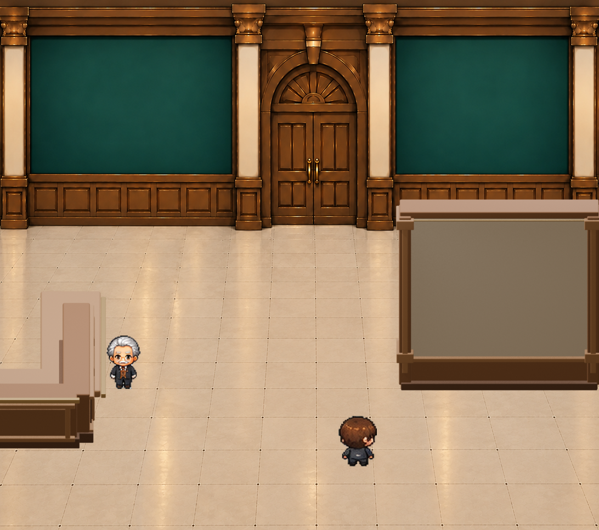

A18｜エントランス家具 v03
Blender製の独立素材を承認済み背景に合成した未承認の比較候補です。ゲーム画面ではありません。

左：右向き受付面のL字カウンター、手前左端へ短辺を延長。右：手前に移動した大型仕切り壁。水色枠は写真の独立表示位置の検討線で、壁に焼き込まれていません。
まだ品質・配置とも未承認です。執事の立ち位置や素材の陰影も含めて修正対象です。
Blender製の独立素材を承認済み背景に合成した未承認の比較候補です。ゲーム画面ではありません。

左：右向き受付面のL字カウンター、手前左端へ短辺を延長。右：手前に移動した大型仕切り壁。水色枠は写真の独立表示位置の検討線で、壁に焼き込まれていません。
まだ品質・配置とも未承認です。執事の立ち位置や素材の陰影も含めて修正対象です。